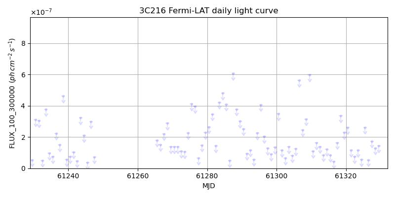
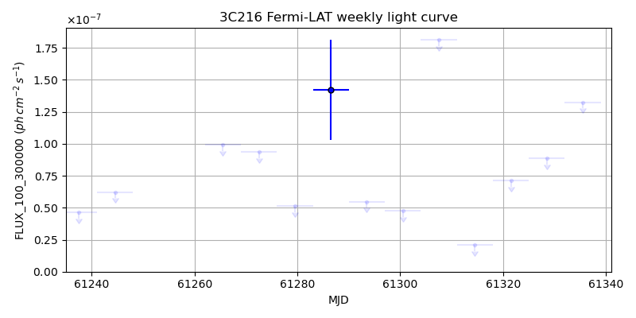
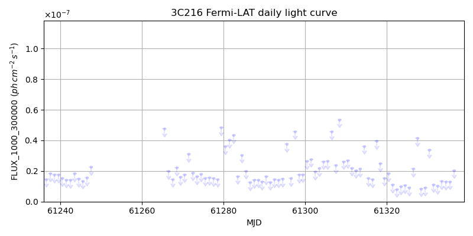
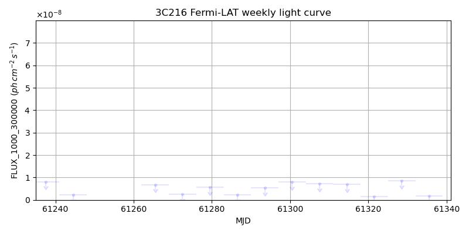

LAT Lightcurve site: https://fermi.gsfc.nasa.gov/ssc/data/access/lat/msl_lc/source/3C_216
NED: Query
Time of last update of this page: UT: 2026-10-24 15:20 (MJD: 61337.639)
| Property | Value |
|---|---|
| R.A. | 9:09:33.60 |
| Dec. | 42:53:45.6 |
| z | 0.670 |
| 3FGL SpectrumType | |
| 3FGL PL Index | -1.00 |
| 3FGL Flux_100_300000 | -1.00e+00 |
| 3FGL Flux_1000_300000 | -1.00e+00 |
| 3FGL Flux >200 GeV | -1.00e+00 |
| 3FGL Extrap. Crab >200 GeV | -1.00 |
| 3FGL Flux After EBL Absorption >200GeV | -1.00e+00 |
| 3FGL EBL Crab Fraction >200GeV | -1.00 |

| MJD | dMJD | Flux | dFlux | Frac3FGL | FracCrab>200GeV | EBLFracCrab>200GeV |
|---|---|---|---|---|---|---|
| 61332.50 | 0.50 | 1.92e-07 | 0.00e+00 | 0.00 | 0.00 | -0.00 |
| 61333.50 | 0.50 | 1.63e-07 | 0.00e+00 | 0.00 | 0.00 | -0.00 |
| 61334.50 | 0.50 | 2.28e-07 | 0.00e+00 | 0.00 | 0.00 | -0.00 |
| 61335.50 | 0.50 | 2.40e-07 | 0.00e+00 | 0.00 | 0.00 | -0.00 |
| 61336.50 | 0.50 | 5.04e-07 | 0.00e+00 | 0.00 | 0.00 | -0.00 |

| MJD | dMJD | Flux | dFlux | Frac3FGL | FracCrab>200GeV | EBLFracCrab>200GeV |
|---|---|---|---|---|---|---|
| 61300.50 | 3.50 | 4.75e-08 | 0.00e+00 | 0.00 | 0.00 | -0.00 |
| 61307.50 | 3.50 | 1.81e-07 | 0.00e+00 | 0.00 | 0.00 | -0.00 |
| 61314.50 | 3.50 | 2.08e-08 | 0.00e+00 | 0.00 | 0.00 | -0.00 |
| 61321.50 | 3.50 | 7.13e-08 | 0.00e+00 | 0.00 | 0.00 | -0.00 |
| 61328.50 | 3.50 | 8.87e-08 | 0.00e+00 | 0.00 | 0.00 | -0.00 |

| MJD | dMJD | Flux | dFlux | Frac3FGL | FracCrab>200GeV | EBLFracCrab>200GeV |
|---|---|---|---|---|---|---|
| 61332.50 | 0.50 | 1.01e-08 | 0.00e+00 | 0.00 | 0.00 | -0.00 |
| 61333.50 | 0.50 | 1.33e-08 | 0.00e+00 | 0.00 | 0.00 | -0.00 |
| 61334.50 | 0.50 | 1.29e-08 | 0.00e+00 | 0.00 | 0.00 | -0.00 |
| 61335.50 | 0.50 | 1.31e-08 | 0.00e+00 | 0.00 | 0.00 | -0.00 |
| 61336.50 | 0.50 | 2.04e-08 | 0.00e+00 | 0.00 | 0.00 | -0.00 |

| MJD | dMJD | Flux | dFlux | Frac3FGL | FracCrab>200GeV | EBLFracCrab>200GeV |
|---|---|---|---|---|---|---|
| 61300.50 | 3.50 | 7.91e-09 | 0.00e+00 | 0.00 | 0.00 | -0.00 |
| 61307.50 | 3.50 | 7.12e-09 | 0.00e+00 | 0.00 | 0.00 | -0.00 |
| 61314.50 | 3.50 | 6.96e-09 | 0.00e+00 | 0.00 | 0.00 | -0.00 |
| 61321.50 | 3.50 | 1.62e-09 | 0.00e+00 | 0.00 | 0.00 | -0.00 |
| 61328.50 | 3.50 | 8.52e-09 | 0.00e+00 | 0.00 | 0.00 | -0.00 |
--------------------------------------------------------- Using user-supplied coords: 9:09:33.60 42:53:45.6 2000 --------------------------------------------------------- FLWO UT night of: 2026-10-25 Local Sid. @ Midnight: 01:50 Sunset (-15.0) (local, UT): 18:49 01:49 Sunrise (-15.0) (local, UT): 05:27 12:27 Moonrise (local, UT): Moonset (local, UT): Moon phase: 0.99 --------------------------------------------------------- AzTime LSID UT Obj_el Obj_az Mn_el Mn_az Sep. --------------------------------------------------------- 18:49 20:39 01:49 -15.2 353.9 26.2 94.5 106.0 19:19 21:09 02:19 -15.5 359.6 32.4 98.6 105.7 19:49 21:39 02:49 -15.3 5.4 38.6 103.2 105.5 20:19 22:09 03:19 -14.4 11.0 44.7 108.4 105.2 20:49 22:39 03:49 -12.8 16.4 50.6 114.6 105.0 21:19 23:09 04:19 -10.7 21.7 56.2 122.3 104.8 21:49 23:39 04:49 -8.1 26.6 61.2 132.2 104.6 22:19 00:09 05:19 -4.4 31.2 65.5 145.3 104.4 22:49 00:39 05:49 -0.8 35.4 68.4 162.2 104.2 23:19 01:10 06:19 2.6 39.4 69.4 182.2 104.0 23:49 01:40 06:49 6.7 42.9 68.2 202.0 103.8 00:19 02:10 07:19 11.2 46.2 65.1 218.6 103.6 00:49 02:40 07:49 15.9 49.1 60.8 231.3 103.4 01:19 03:10 08:19 20.8 51.7 55.7 240.9 103.2 01:49 03:40 08:49 25.9 54.0 50.1 248.5 103.0 02:19 04:10 09:19 31.1 55.9 44.3 254.6 102.8 02:49 04:40 09:49 36.5 57.6 38.2 259.8 102.6 03:19 05:10 10:19 41.9 58.8 32.1 264.4 102.3 03:49 05:40 10:49 47.4 59.5 26.0 268.5 102.1 04:19 06:10 11:19 52.9 59.5 19.9 272.4 101.9 04:49 06:40 11:49 58.4 58.7 13.8 276.2 101.7 05:19 07:11 12:19 63.8 56.4 7.8 279.9 101.4 05:27 07:18 12:27 65.2 55.5 6.2 280.9 101.3 --------------------------------------------------------- Moon up all night, no dark time. Dark hours >55 deg.: 0.00